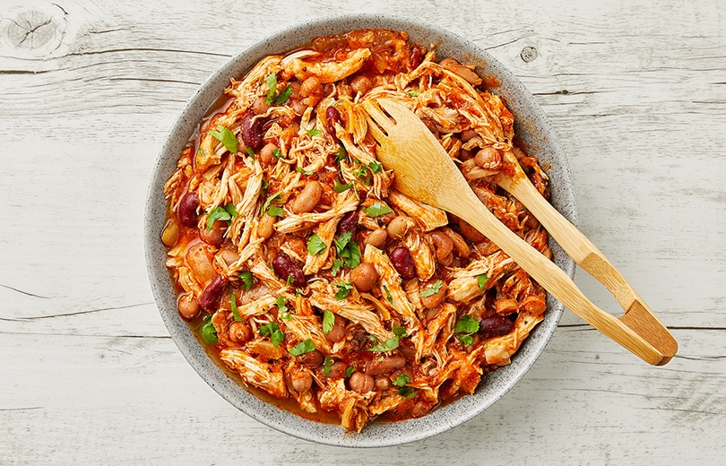

Simple Slow Cooker Pulled Chicken

Description
Simple Slow Cooker Pulled Chicken makes for a hearty meal that’s exactly what it says it is. Just chop the ingredients, add to the cooker, and then get ready enjoy the delicious chicken dish.
Ingredients
- Plain tomato pasta sauce or passata - 1 x 400-500ml
- Small brown onion, sliced - 1
- Bean mix - 1 can
- Chicken breasts or boneless thighs - 500 g
- Chilli powder - 1/2 tsp
- Ground cumin - 1/2 tsp
- Paprika - 1/2 tsp
- Salt, to season
- Pepper, to season
Steps
- In a slow cooker, add the pasta sauce, onion, beans and place the chicken on top. Cook on high for 2 hours.
- Once cooked, remove chicken from the slow cooker and shred it with two forks. Return to the slow cooker and add the spices, season well and stir to combine.
- Place mushrooms and onions in the bottom of the slow cooker. Top with pork and pour the soup mixture over the top.
Tip: this chicken is perfect in a burrito bowl, in tacos or in a burger bun with coleslaw. Add coriander, feta and a squeeze of lime to serve.